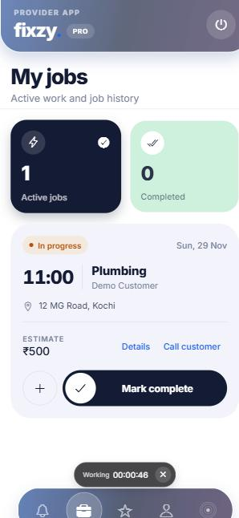
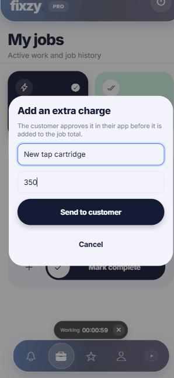
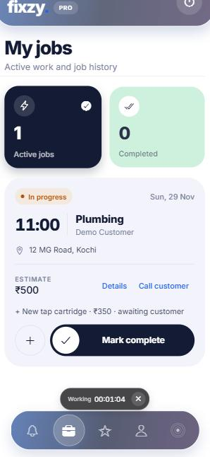
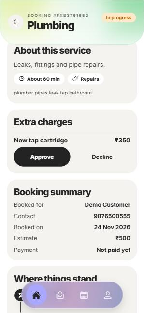
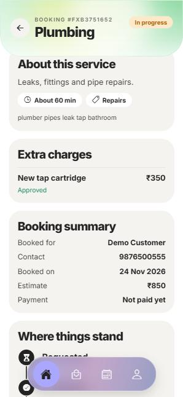
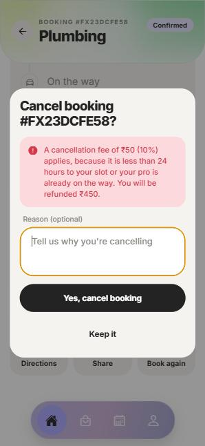

Fixzy: feature updates
What was added, how it is used, how it was tested, and how it reaches your phones. Latest first. Last updated 24 Nov 2026.
1. Extra charges during a job
The pro can add parts or extra work mid-job. The customer approves or declines it in the app before any money is added.
Why
Until now every job was fixed at the starting price. Real jobs often need an extra part or more time, and pros had to settle it in cash with no record. Now the extra is written down, approved by the customer, and counted in the total and in the pro's earnings.
How it is used
Pro app: on an active job (on the way, or in progress), tap the + button beside the slider. Enter what it is for and the amount, then Send to customer. The job card lists every extra and its status (awaiting customer, approved, declined).
Customer app: the customer gets a push notification, opens the booking, and sees an Extra charges card with Approve and Decline. The booking total updates as soon as they approve.
Workflow
Rules built in
- Only the assigned pro can propose, and only while the job is on the way or in progress.
- Only the customer who owns the booking can approve or decline. A pro cannot approve their own charge.
- Up to 3 charges can wait for an answer at once. Amount must be ₹1 to ₹1,00,000.
- A job cannot be marked complete while a charge is still waiting for the customer.
- An answered charge cannot be changed. Nothing can be added after the job is done.
- Approved extras add to the booking total, so the platform commission and the pro's earnings include them automatically. Declined and pending extras add nothing.
Online payment is still taken for the original estimate only. An approved extra is paid to the pro directly (cash or UPI) at the end of the job. Charging extras online is a possible later step.
What changed (technical)
| Area | Change |
|---|---|
| Database | New BookingExtra table (label, amount, status, timestamps) and migration 20261124000000_booking_extras. Existing data is untouched. |
| API | POST /bookings/:id/extras (pro), PATCH /bookings/:id/extras/:extraId (customer). Booking and pro job responses now include extras. |
| Pro app | "+" button, extra-charge form, per-job list of extras with status, "Estimate + extras" label. |
| Customer app | "Extra charges" card on the booking page with Approve / Decline. |
Testing
Automated end-to-end test backend/test/extras.ts runs against a real database: 25 of 25 checks passed. It covers: KYC-approved pro assigned to a booking; extras rejected before the job starts; customer cannot propose; validation of text and amount; both pending extras visible to the customer with the total unchanged; job completion blocked while pending; other customers and the pro blocked from answering; approve and decline; answered charge locked; total equals estimate plus approved extras only; pro job list includes extras; completion works once all are answered; nothing can be added after completion; pro earnings include the approved extra after the 20% commission.
Typechecks pass for the backend, the customer app and the pro app. Manual walkthrough on the web builds of both apps against the test server is shown below.
Screenshots





Delivery
- Apply the database migration to the live database (
prisma migrate deploy). - Deploy the backend.
- New app builds: Customer app and Pro app (both needed, since both screens changed).
- Add to the changelog page and publish the builds on the Overview page.
2. Cancellation policy and automatic refunds
Clear cancellation rules, a fee shown before the customer confirms, and automatic partial refunds of online payments.
Why
Before, cancelling a paid booking refunded the full amount whenever it happened, even with the pro already on the way, and the customer was never told about any rule. Now late cancellations carry a fee that protects pros' time, the customer sees exactly what will happen before they confirm, and the refund is processed automatically for the right amount.
How it is used
Customer app: tap Cancel booking. The dialog now states the result up front: either "Free cancellation" (with the refund amount if they paid online), or the fee and the amount they will be refunded. After cancelling, the booking summary shows the cancellation fee.
Admin panel: under Settings → Rules, two new values: free cancellation window (hours before the slot, default 24) and late cancellation fee (% of the booking total, default 10). Changes apply immediately, with no app release.
Workflow
The rules
| Situation | Fee |
|---|---|
| No pro confirmed yet (request still open) | None |
| Pro confirmed, more than the free window before the slot | None |
| Pro confirmed, inside the free window | Fee % of the booking total |
| Pro already on the way or working | Fee % of the booking total |
| Cancelled by admin or the pro's side | None, always a full refund |
- If the customer paid online, the fee is held back and only the remainder is refunded. The refunded amount is recorded on the payment.
- If they have not paid online, the fee is recorded on the booking and shown to them; it is settled outside the app for now.
- Setting the fee to 0% turns the policy off. Values outside 0 to 100% are rejected.
The fee is kept by the platform in this version. Passing part of it to the pro who lost the slot is a possible later step.
What changed (technical)
| Area | Change |
|---|---|
| Database | Migration 20261124010000_cancellation_policy: Booking.cancelFee and Payment.refundedAmount. Existing data is untouched. |
| API | New GET /bookings/:id/cancellation (fee and refund preview). Cancelling now saves the fee and issues a partial refund. Two new admin settings, rules.cancelFreeHours and rules.cancelFeePercent. |
| Customer app | Cancel dialog shows the fee and refund; booking summary shows the fee. |
Testing
Automated end-to-end test backend/test/refunds.ts against a real database and a mock Razorpay server that records every refund request: 18 of 18 checks passed. It covers: no fee in the free window with a full refund of the exact paid amount; preview matches the real outcome; another customer cannot see the preview; unconfirmed requests are free; late cancel keeps 10% and refunds exactly the rest, recorded on the payment; late cancel of an unpaid booking records the fee and makes no refund call; the fee applies once the pro is on the way; an admin changing the percentage takes effect immediately; 0% means free; invalid values are rejected; admin cancellation always refunds in full. The earlier extra-charges test was re-run afterwards and still passes (25 of 25). Typechecks pass for the backend and customer app.
Real refunds through Razorpay itself need your live Razorpay keys, so that last step is verified against a mock and should be confirmed with one small test payment once released.
Screenshots

Delivery
- Apply the database migration to the live database (
prisma migrate deploy). - Deploy the backend. Optionally set the policy values in Admin → Settings (defaults: 24 hours, 10%).
- New Customer app build (the cancel screen changed). The Pro app is unchanged for this item.
- Do one small real payment and cancel to confirm the Razorpay refund end to end.
How updates reach you
- Built and tested on our test server with an automated test and a manual walkthrough (as above).
- Shared with you as this page plus the changelog entry, so you can review what changed.
- Released in this order: database migration, backend deploy, then new Customer and Pro app builds, which appear for download at the top of the Overview page.
- Changes to texts, services and options made in the admin panel go live without a new app build.